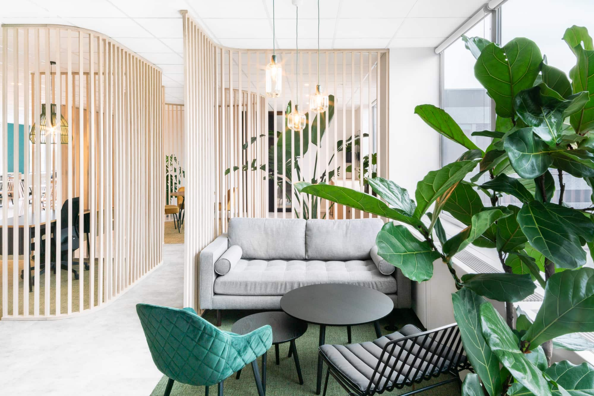

Biophilic design: With a growing awareness of the benefits of spending time in nature, biophilic design is expected to become more popular in 2023. This design approach incorporates natural elements such as plants, water features, and natural lighting into interior spaces to create a more calming and relaxing environment.
